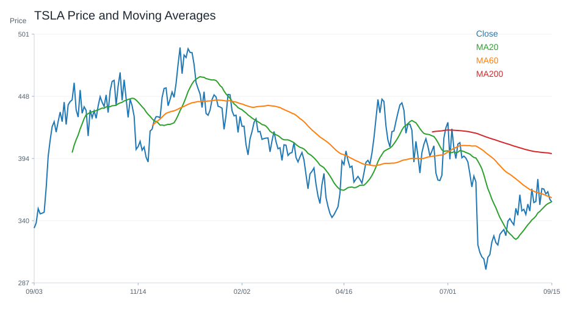
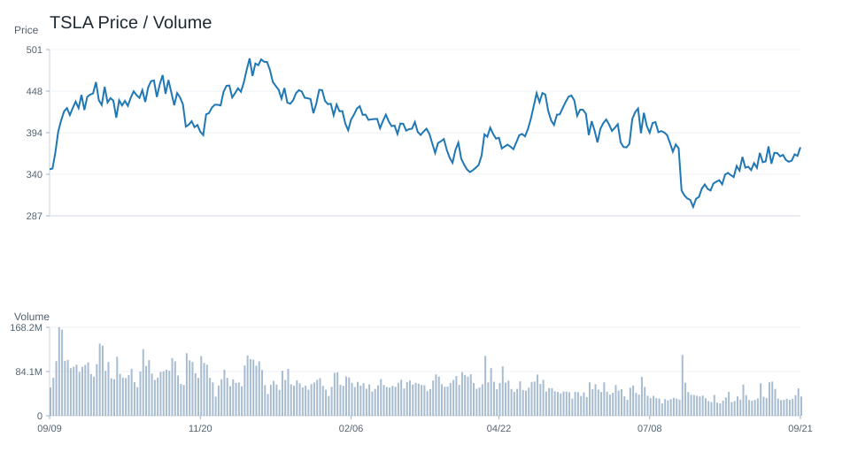
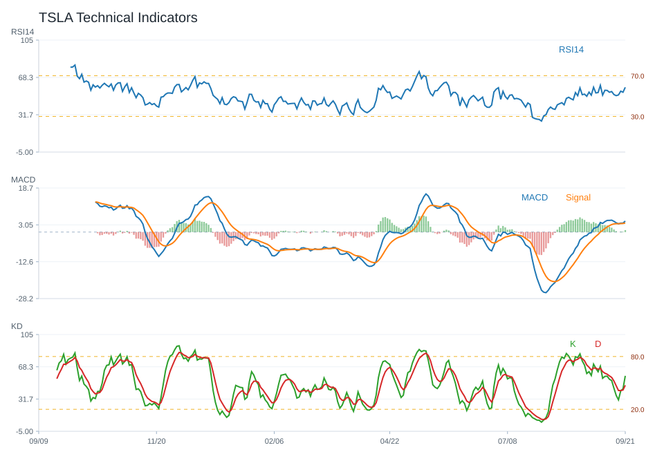
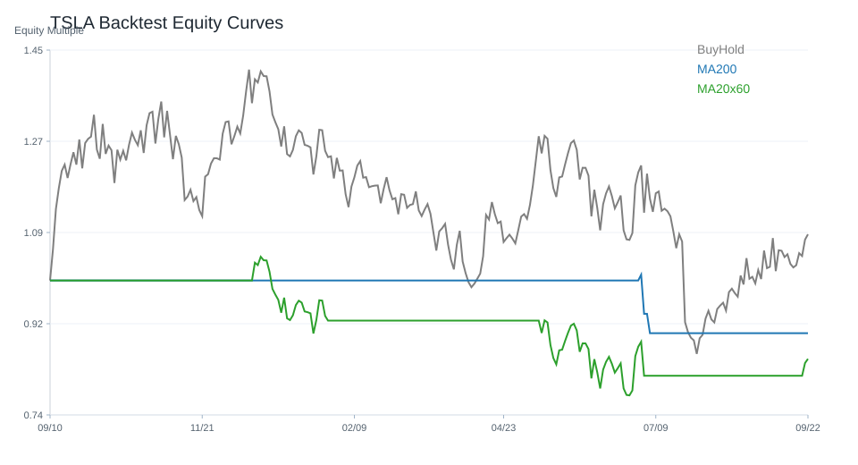

20 日
-14.87%60 日
-15.58%觀察等級
高風險觀察市場資料
2026-07-23- 成交量115,219,900.00
- 20 日均線391.83
- 60 日均線403.92
- 200 日均線415.41
- 距 52 週高點-34.74%
- 距 52 週低點5.64%
技術指標
Python 計算- RSI1429.10
- MACD hist-6.22
- KD K/D10.57 / 15.59
- ADX16.43
- 布林上緣437.64
- 布林下緣346.01
量價與事件
規則式分析- 量價型態放量下跌
- 量價分數-4
- 20 日量比2.69
- OBV 20 日變化-12.13%
- 事件偏向事件中性
- 事件分數0
研究訊號與觀察等級
不是買賣建議高風險觀察；研究訊號 強烈偏空，分數 -13。
多項條件偏弱或風險較高，研究上需提高風險意識。
- 20 日跌幅偏弱
- 60 日趨勢偏弱
- 跌破 20 日均線
- 跌破 200 日均線
- RSI 偏弱
- MACD histogram 為負
- KD 偏弱
- 量價型態：放量下跌
回測摘要
歷史資料研究| 策略 | CAGR | Sharpe | 最大回撤 | 勝率 | 交易次數 |
|---|---|---|---|---|---|
| 價格高於 200 日均線 | -8.33% | -0.02 | -64.68% | 46.62% | 25 |
| 20/60 日均線交叉 | 2.50% | 0.26 | -46.54% | 47.91% | 10 |
| 買進持有 | 3.32% | 0.35 | -65.05% | 51.00% | 1 |
圖表
價格 / 量價 / 技術 / 回測TSLA 價格均線

TSLA 量價關係

TSLA 技術指標

TSLA 回測
